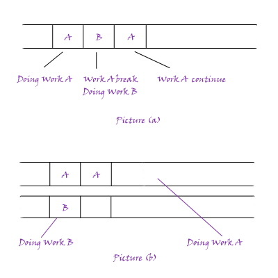
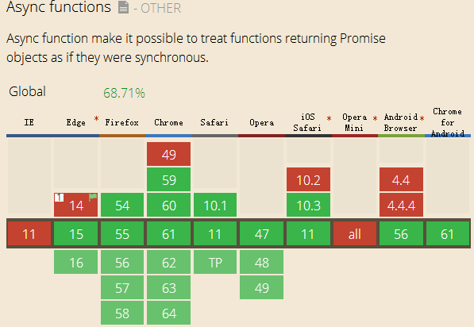

This blog will discuss four methods of async operations in JS. But first, let's talk about what is the async in JS?
The async and multithreading are different, but their purposes are the same: Avoid thread congestion. The async operation is doing several works in one threading, the following picture represents the different between async and multithreading.

In the picture(a), the Work A is running first, and then the server stops Work A and gives the thread to Work B, after Work B is finished, the thread will back to run Work A. All the operations will happen in the one thread. However, in the picture (b), the two threads can work individually, independently, so the Work A doesn't need to wait. There are different but have the same purpose. If you want to know something about multithreading in JS, just go to another blog:
JS Web Worker. Because some limited of multithreading(You can click the link above), the async method in JS is very important.
No more nonsense, let's begin!
1. Callback function
As we all know, JS is a single threading coding language, so we have to use some tricks before ES2015. That is callback function. If you have ever used node.js before, you must know the "readFile" function, it's a classical callback function. Let's see an example:
fs.readFile('test.txt', function (err, data) {
console.log(data);
});
This function will print data after finish reading file "test.txt". It's fine in some cases, however, if we want to read many files one by one, we have to put another "readFile" function in the callback function which will make the code very very complex and hard to read. So in the ES2015, we will have another method, called "Promise" object.
2. Promise
Let's see an example of using Promise object first.
readFile(filename).then(function(data) {
console.log(data.toString());
});
Yes, it only add a "then" method to represent callback function, it make the code easier to read. Maybe a little, it changes nothing but the coding style. So why do we call it Promise Object? Is it an object? Absolutely YES! Let's code a simple Promise Object and see how it works.
var promise = function( value ) {
// do something to the value
return {
then : function( fn ) {
// run fn
},
catch : function( err ) {
// print err
}
}
}
It returns an object with "then" method and "catch" method to catch err. And we can put the parameters of "then" method directly from outside.
It's also fine, however, do you want to see so many "then then then" in your code blocks? So we need another method right now!
3. Generator and Thunk
The ES2015 gives us a key word "yield" and its "next", "value", "done" methods. It provides a method to cut down the running thread.
function* test(x){
try {
var y = yield x + 2;
} catch (e){
console.log(e);
}
return y;
}
var g = test(1); // run x = 1, then stop running
g.next(); // run x + 2. value = 3, done = false
g.next(2); // run y = 2. value = 2, done = true
The "next" method is to continue running function, when meeting "yield" keyword, the function will stop until the "next" method. Every period, the generator function will have two attributes: value and done. The "value" is real-time value of function, and "done" represent is the function finished? It's a boolean type. You must notice the "*" before the function name, it is required if you use this method.
However, do you want to write "next" method over and over again? No! You must ask can we write a function to run the "next" method automatically? Absolutely YES! That is Thunk! But before that, I want to talk about Function Currying(函数柯里化). This concept will help us to learn Thunk. Ok, what is function currying? Let's see a very simple example first.
function currying(value1) {
console.log(value1);
return function(value2) {
console.log(value2);
};
}
var test = currying(1)(2); // print 1, 2
// the same as:
var test = currying(1);
test(2);
This example will run the "currying" function first, then get the value2 from outside to run the callback function. So we can add parameters of callback function from the outside.
So we can use this concept to write the Thunk function, let's see how it works:
function thunk( fn ) {
var g = fn();
function next( data ){
var result = g.next( data );
if (result.done) return result.value;
result.value.then( function(data){
next(data);
});
}
next();
}
thunk( function *() { // call thunk function
var f1 = yield readFile("book1.txt");
var f2 = yield readFile("book2.txt");
});
So, in this way, we can run the thunk function to trigger "next" method automatically.
Ye, everything looks great. But maybe for some reasons, I guess maybe all JS coders do not want to use "*" or pointer at all! Whatever, changes come in. The last method is perfect, I mean not only is it easy to read, but also easy to write.
4. "async" and "await"
Just see the exapmle directly:
async function readfile(){
var f1 = await readFile("book1.txt");
var f2 = await readFile("book2.txt");
console.log("This is async method");
};
It only change "*" to "async", and change "yield" to "await". But we don't need to write a Thunk function again. And this method is apparently more easier to read. And its compatibility picture is below.

Ok, those are all async methods of JS I have known. Maybe you will worry about the compatibility of "async", however, trust me, it will become the most practical method very soon.
(That's all)